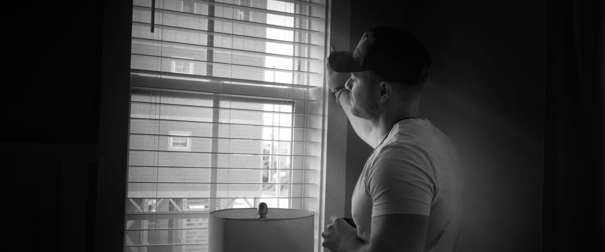

ZAIDEN
VIEW NEWEST WORKI’m a cinematographer with a love for vintage lenses and focusing on having character in my work, and am against the bland look of most high budget films recently.
Most of my experience has been solo as a Director, Editor, Writer, and Cinematographer. I have my hand in all baskets of the filmmaking process.
AYLA & SAM'S WEDDING

THE MISSING BARTENDER

OUTERBANKS

GIRAFFE - MUSIC VIDEO

SNOWED IN

RAIN